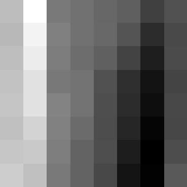

CS 280A Project 4
Autostitching Photo Mosaics
Leo Huang
an attempt at stitching together a mosaic
Overview
This project explores different aspects of image warping to apply to image mosaicing. We take various photos from the same point of view with overlapping fields of views. Using these images, we can create an image mosaic by registering, projective warping, resampling, and compositing them.
In later parts, we also explore methods to automatically find point correspondences and stitch images based on methods from the paper “Multi-Image Matching using Multi-Scale Oriented Patches” by Brown et al..
Compute Homographies
Approach
After manually marking point correspondences, we can compute the homography by formulating a linear equation and solve using the least squares solution. Once all the coefficients of the homography matrix are recovered, we can construct the transformation and use it to warp from one image perspective to another image perspective.

image of room (left)

image of room (right)
Image Warping
Approach
To warp our image, we begin by creating a polygon mask of the image to be warped and warping it to the destination perspective. We then use inverse warping to sample and warp the image into the destination plane. The bounding box of the newly warped image is determined by taking the minimum and maximum x and y coordinates from the warped polygon mask.

images overlayed
Image Rectification
Approach
With our warping functions, we can now rectify images of planar surfaces to be frontal-parallel.

box (rectified)

box (rectified + crop)

sticker (rectified)
sticker (rectified + crop)
Generating Mosaics
Approach
To create a mosaic from overlapping images, a similar workflow is utilized from rectification. First, create a canvas image which all images are warped onto. The image histograms are normalized to account for exposure differences. Then, using the marked correspondences, we compute the homography and warp all the images onto the canvas plane. For each image, a blending mask is generated using the "distance to zero" metric computed with scipy.ndimage.distance_transform_edt. With these metrics, we calculate a mask for which regions each image should be used. Finally, Laplacian Pyramid blending is performed on the masks to smooth the overlapping regions of the image and reduce any edge artifacts.
Distance Metric
After computing the distance metric using scipy.ndimage.distance_transform_edt, we can compare at each pixel which image's distance metric is higher, and generate a region where each image should be used when blending together the mosaic.

distance transform on room (left)
distance transform on room (right)
Results (w/ manual correspondences)
Room

simple linear blending
For all the lakeside views, I think due to poor camera work such as camera movement and exposure differences, the stitches were much harder to obtain.
We can observe lots of edge artifacts and ghosting due to the color differences, which persisted even through the laplacian blending and normalization.
Lake
Laplacian blending + normalizing
House

Laplacian + normalization
Trees

linear + normalization

Laplacian + normalization
Other
These were performed on images I took later after observing some of the issues with my image data, and as a result, these stitches are much more satisfying to look at.
Detecting Corner Features
Approach
To begin implementing automatic stitching, we can use the Harris corner detector to detect potential correspondences. This functions by computing the sum of product of gradients throughout the image to determine whether or not a pixel corresponds to a corner.
Adaptive Non-Maximal Suprression (ANMS)
Approach
Because the output of the Harris corner detector is much to dense, we use an algorithm described in the MOPS paper to only select points that are strong and evenly spaced throughout this image. With adaptive non-maximal suppression, a target number of points was generated, and then a suppression radius was empirically found to match the target number of remaining points.
Extracting Feature Descriptors
Approach
As suggested in the paper, from each of the remaining candidate points, a feature descriptor should be created which extracts features from the points. Here, we sample 40x40 pixel patches, and then downsample each to an 8x8 pixel patch through Gaussian blurring. We then unbias and normalize the patches, creating feature descriptors that extract the axis-aligned features at each point of interest.
feature descriptor on image

feature descriptor patch
Feature Matching
Approach
With our feature descriptors, the paper describes a method to match our features together - use Lowe's ratio to remove non-matches. To do this, we first compute the first two nearest neighbors, 1-NN and 2-NN, of each feature patch between images through sum squared difference or Euclidean distance. Then, we only keep matches where the 1-NN distance / 2-NN distance < threshold, which suggests that the match is valid.
Compute Homographies using RANSAC
Approach
Although Lowe's trick does greatly reduce the number of outliers, the set of matches can still contain incorrect matches and outliers. To address this, we use random sample consensus (RANSAC) to increase the robustness of our homography estimates. 4 pairs of points are randomly sampled from the remaining matches, and an exact homography is computed using these points. The homography is then applied on all the points, and a set of inliers is generated by computing the Euclidean distance between the transformed points and their corresponding destination matches. We repeat this process a few hundred times, and ultimately keep the largest set of inliers, from which we compute the final homography used to warp the images.
No visualization here :(
Results (w/ autostitching)
Most of the results do seem consistent with the manual stitching. However, with the room stitch, I think the correspondences were difficult to find, in addition to the camera moving slightly between each image, which causes a less than ideal stitch.
Here, similar to the manually stitched, we can still observe edge artifcats, which are possibly due to poor camera work and exposure differences. However, I'm pretty satisfied that it is relatively consistent with the real view.
What I learned
Personally, I found the feature matching really fascinating, and thought it was really cool how simple math can be used to automatically find all these points of interest. The feature extraction and matching was really cool since it generated stitches that were very similar to the manually stitched, but without the need to click through all correspondences.